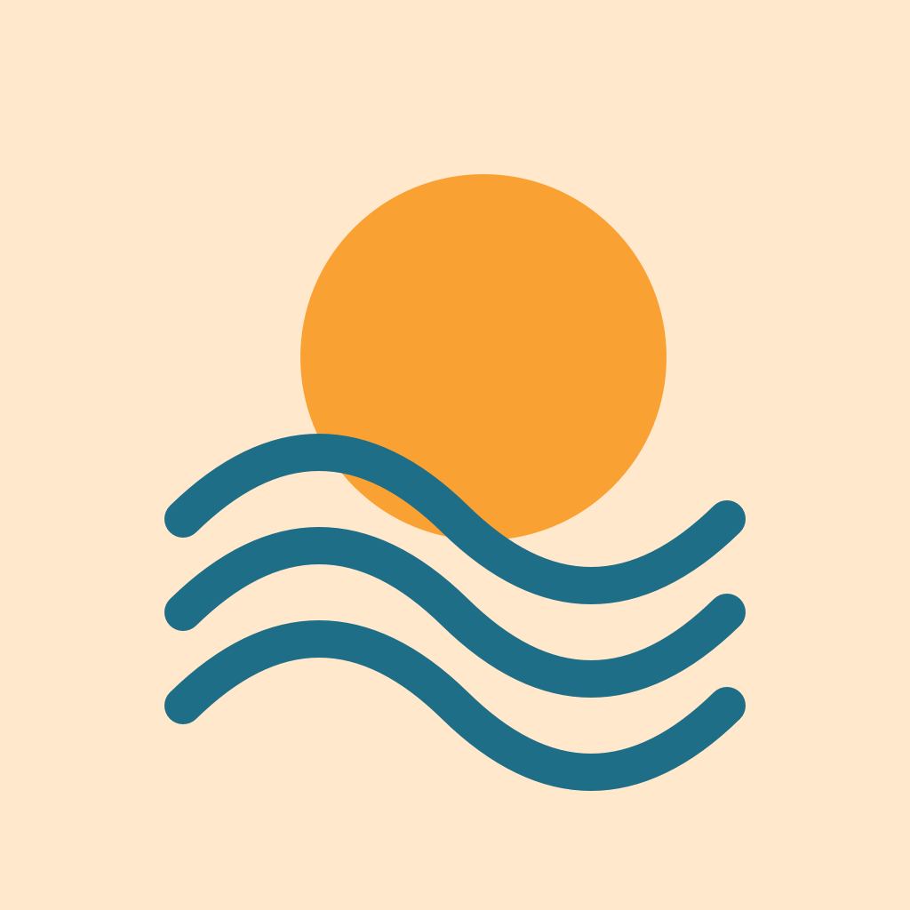

Little Beach
A little weather. A little ocean air.
Should I go to the beach?
Get a quick beach brief with air and feels-like temperatures, wind, current forecast UV, sunrise and sunset countdowns, nearby buoy water temperatures, tides, and official local weather alerts.
The conditions that matter
Use your location or choose a spot on the map. A selected beach is remembered on your device for next time. Conditions refresh about every ten minutes while the app is active. Search beaches and places, switch temperature and distance units independently, and open the original buoy, tide, and alert reports. Missing data is clearly marked.
Weather comes from Open-Meteo, with buoy observations, tides, and alerts from NOAA and the National Weather Service. Tide and alert coverage is primarily U.S. coastal locations; buoy coverage varies. Offshore readings can differ from the shoreline.
Weather data by Open-Meteo, licensed under CC BY 4.0. Values may be rounded or converted to your chosen units. UV and sunrise/sunset countdowns are calculated from its forecasts.
Remember your beach days
Check in once per day, see when you last visited, and edit past visits in the calendar. Check-ins work offline and sync through your Apple iCloud account when available. Each iCloud account and device-only use keeps a separate history. Import or export your dates in Settings. If iCloud backup cannot hold your history, the app keeps it locally and shows a warning so you can export a copy. Visits save dates only, without location or weather.
A little beach wisdom
On supported devices with Apple Intelligence available, a short, playful answer is written on your device using the conditions and your latest recorded visit. Customize its prompt in Settings. A classic answer is available when AI cannot run.
AI can make mistakes, including about dangerous conditions. Follow official alerts, lifeguards, and beach closures. The answer is not safety advice, and the app does not include beach closures or water-quality notices.
Made for iPhone
Requires iOS 17 or later. On-device AI requires iOS 26 or later, an eligible device, and available Apple Intelligence. Live conditions need an internet connection; check-ins remain available offline.
Contact and support
For questions, help, or privacy requests, email little-weather@nevostruev.com. Describe the issue; share location or check-in information only if you want to.